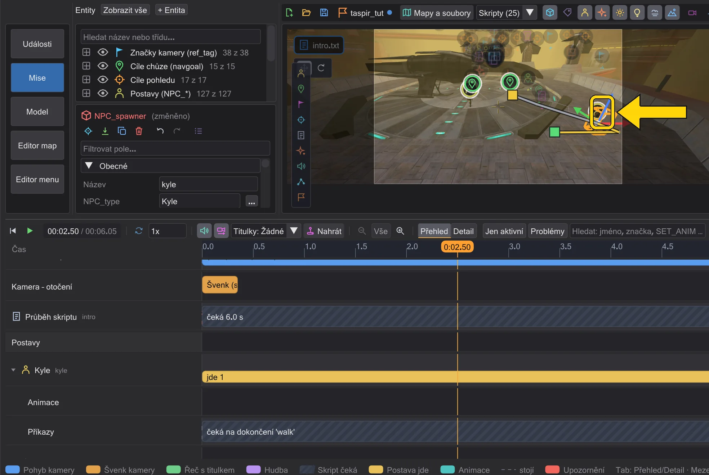

Postavy a dráhy
Postavy chodí ke svým navgoalům a lodě létají svými pohyby - vidíte celou dráhu a můžete ji měnit v mapě.

Výběr postav a lodí#
Kliknutím na postavu nebo loď v pohledu vyberete její entitu - spawner postavy, brush entitu lodi. Značka a gizmo sledují model, zatímco se pohybuje, a obrys ukazuje, co je vybrané. Šipka u postavy ukazuje, kam se model dívá.
Začátek, konec a nové body#
- Táhněte úchyt konce a posunete cíl chůze (
waypoint_navgoal) nebo konec letu. - Táhněte úchyt začátku a posunete jen začátek, ne celou čáru.
- Uchopte postavu uprostřed chůze (časová osa mezi začátkem a příchodem) a táhněte: v tom okamžiku vznikne nový bod - u postav nový
ref_tagjako navgoal (nemění navigační síť, takže postava jde dál ke svému starému cíli jako ve hře), u lodí rozdělenýmove. Pokud postava z nějakého bodu nenajde cestu, vede k nedosažitelnému cíli červená přerušovaná čára s poznámkou "Odsud nevede cesta k ...". - Otočení funguje stejně: uprostřed letu vytvoří kruhy nový bod s novými úhly. U postavy (NPC) zapíší v tom čase
set ( SET_DYAW )- postava se otáčí svou rychlostí otáčení, jako ve hře; u hráče zůstaneset ( SET_ANGLES ), které otočí okamžitě. Při chůzi platí po příchodu postavy, protože hra natáčí jdoucí postavy ve směru chůze. Je-li v tom okamžiku aktivní cíl sledování, stavový řádek varuje: ve hře se postava dál dívá na něj. - Po letu - v pauze před dalším nebo po posledním - vytvoří posunutí nebo otočení lodi také nový klíč: nový
moveod konce předchozího letu do tohoto okamžiku. Začátek a ostatní klíče si ponechají místo, úhly a časy. Stejně tak posunutí postavy po její poslední chůzi přidá nový navgoal (ref_tag), ke kterému po příchodu dojde; její spawner - začátek - zůstává. Během přehrávání časové osy se gizmo nezobrazuje. Jedno Ctrl+Z vrátí celou změnu gizma - nový bod i s jeho novým navgoalem - a Ctrl+Y ji přesně obnoví.
Chůze nebo běh, sdílené cíle#
Pravým tlačítkem na úchytu konce chůze (nebo na jejím pásu na časové ose) otevřete její nabídku:
- Chůze (od této chůze dál) / Běh (od této chůze dál) - zapíše před navgoal
SET_WALKINGneboSET_RUNNING. - Dívat se na cíl při chůzi - postava se při chůzi stále otáčí k jiné postavě (
SET_WATCHTARGET). - Jít pozpátku (dívá se dál dozadu) - značka pohledu za startem ji nechá jít pozpátku; Dívat se ve směru chůze to ukončí.
Sdílí-li několik postav jeden navgoal, jeho posunutí by posunulo všechny. JK Studio si toho všimne a dá této chůzi nejdřív vlastní kopii cíle - stavový řádek vám řekne, kterou vytvořil.
BOTH_WALKBACK1 nebo BOTH_RUNBACK1 jako hra.Jak se postavy pohybují - jako ve hře#
Náhled pohybuje NPC podle vlastních pravidel hry, snímek po snímku: řízení, fyzika pohybu a cesty. Co vidíte, je to, co hra s vaším skriptem udělá:
- Rychlost. Chůze používá rychlost nastavenou, když postava vyráží - i když
SET_WALKING,SET_RUNNING,SET_WALKSPEEDneboSET_RUNSPEEDpřijdou hned poSET_NAVGOAL. Nová rychlost během chůze změní zbytek cesty. Bez rychlosti ve skriptu platí hodnoty ze souboru .npc. - Zastavení.
SET_NAVGOALsNULLzastaví postavu tam, kde je;dowaitna chůzi pokračuje. Nový navgoal během chůze začne od místa, kde postava je. - Otáčení. NPC se otáčejí svou rychlostí otáčení: 60 + 3 ×
SET_YAWSPEEDstupňů za sekundu (330 s obvyklým yawSpeed 90).SET_DYAW,SET_VIEWTARGETaSET_WATCHTARGETotáčejí plynule,SET_ANGLESotočí okamžitě.rotateamovena NPC nic nedělají - ve hře také ne. Obtížnost a pravidla hry mění rychlost některých tříd (Předvolby). - Gravitace. Postavy stojí na podlaze mapy, padají, stoupají po schodech, drží se svahů a jezdí výtahy - s
gravitymapy aSET_GRAVITY. Dveře, výtah nebo vlak, kterým postava stojí v cestě, se zastaví jako ve hře: dveře se vrátí (drtič dál tlačí), vlak čeká a postava utrží poškození dveří nebo vlaku (dmg, výchozí 2); postava na výtahu, která by byla přimáčknuta k něčemu, zůstane pozadu, má-li místo, jinak výtah zadrží (ne u brushů pohybovaných skriptem). Postava spawnutá při načtení mapy ještě padá, když animační sekvence začne, jako ve hře.DROPTOFLOORve hře pro jednoho hráče nic nemění. - Postavy mapy. Každá postava, která se objeví při načtení mapy (entita
NPC_*beztargetname), stojí v náhledu, i když ji žádný skript nejmenuje - jako droid vedle Anakina v md_am_sith. Karta skriptu vynechá herce jiných animačních sekvencí: postava sNPC_targetnamea spawnflagem CINEMATIC ve hře sama nic nedělá, takže se ukazuje jen na kartách, jejichž skripty ji používají (v md_am_sith ukazují titulky Anakinaani4, neani1ažani5ostatních scén). Prázdná karta ukazuje mapu tak, jak se načte, se všemi postavami. Třídy jakoNPC_Droid_R2D2,NPC_KyleneboNPC_Stormtroopersi svůj typ postavy vybírají samy, jako ve hře; kde hra volí náhodně (NPC_Stormtrooperbez spawnflags, náhodné spawnery Movie Duels), náhled ukazuje první volbu. - Cesty. Postava jde ke svému cíli rovně jen tam, kde by to dělala hra: blízko (pod 110 jednotek), mezi sousedními navigačními body (pod 500) nebo s volnou linií (pod 400). Jinak jde po síti navigačních bodů, bod po bodu - spojte své cíle navigačními body (Navigační body NPC). Za rohy se chůze ukazuje jako několik kusů téhož příkazu.
- Žádná cesta. Nemá-li síť cestu, postava stojí a
dowaitna chůzi nikdy neskončí - ve hře také. Seznam stavů jmenuje postavu a cíl. - Dveře. Dveře a jiné pohyblivé brushe stojí tam, kde je hra v tu chvíli má. NPC čeká u zavřených dveří a jde dál, když se otevřou. Zamčené dveře (nebo ty, které může otevřít jen hráč) blokují cestu, dokud jsou zavřené. Zdi a dveře, které skript posouvá (
move,rotate) nebo odebírá, jsou tam, kde je skript má. Postava stojící na pohybujícím se výtahu nebo plošině jede s ní, i když jde, jako ve hře. - Římsy, zakřivení a jiná NPC. NPC padají z říms a přistávají - s animací ve vzduchu hry při dlouhém pádu a s její animací přistání tam, kde ji hra přehraje (tvrdé přistání je zpomalí), i když byla postava spawnuta ve vzduchu; skriptová animace horní části těla, která začala před skokem, se po něm nevrátí, jako ve hře; zakřivené povrchy (patche) je blokují jako zdi. Neprocházejí skrz sebe: když se dvě NPC potkají, náhled ukáže, jak je hra nechá projít - a časy
dowaitto následují. Jako ve hře postava zneviditelněná (SET_INVISIBLE true) nebo nepevná (SET_SOLID false) nikoho neblokuje, postavy stojící v mapě bez skriptu ano a zabitá postava zůstane v cestě, dokud se nestane mrtvolou (5 s v Movie Duels, 0.5 s v OpenJK; Mark1 nebo Interrogator nikdy). Postava znovu zpevněná (SET_SOLID true), zatímco stojí uvnitř jiné, se stane pevnou až tehdy, když je volná -dowaitna tentosetčeká stejně dlouho jako ve hře.SET_ORIGINaSET_ANGLESstag( "name", ORIGIN )neboANGLESumístí postavu na ref_tag nebo navgoal tohoto názvu; bez takového tagu příkaz nic nedělá, jako ve hře. Skript spuštěný entitou (spouštěčem skriptu, triggerem, spawnerem NPC) čte klíčeparm1...parm16této entity pomocíget( STRING, "SET_PARM1" )a uvnitř blokuaffectčtegetparametry ovlivňované entity - takžeaffect ( $get( STRING, "SET_PARM1" )$ )amove ( $tag( get( STRING, "SET_PARM1" ), ORIGIN )$, ... )posunou entitu tam jmenovanou na tag tam jmenovaný, jako hra;movebere jako cíl itag( "name", ORIGIN ). NPC, která umějí skok Silou (FP_LEVITATION ve svém .npc), skáčou jako ve hře: přes hrany skoků sítě navigačních bodů (targetJump) a ke svému cíli po 2 sekundách zablokování; náhled přehrává animace hry - animaci skoku (při odrazu od země přepnou nohy do pózy skoku, zatímco horní část těla ji dokončí; salto zůstává celotělové) a animaci přistání, i po skokuBS_JUMP, který přistane až poBS_DEFAULT. PoSET_NO_ACROBATICS trueNPC nikdy neskočí (hrany skoků stále bere a zastaví se u nich, jako ve hře). Ve stavu chováníBS_JUMPse NPC otočí ke svému navgoalu, přikrčí se, skočí tam jedním obloukem a přistane, jako ve hře;dowaitna navgoal skončí po animaci přistání, jakmile dosáhne cíle (přistane-li kratší, skočí znovu). Oblouk je vlastní oblouk hry: u navgoalu nad NPC dopadne kratší a u navgoalu pod ním přeletí dál, a navgoal visící ve vzduchu je jen bod, na který míří. - Smrtící oblasti. Postava, která vejde nebo spadne do
trigger_hurt, utrží jeho poškození jako ve hře (dmg,delay,wait, spawnflags;useoblast zapíná nebo vypíná) a zemře, když jí dojde zdraví: přehraje svou smrt, zůstane tam, kde padla, a spustí se jejídeathscript. Zdraví je to, které jí dá hra (klíčhealth, jinak soubor .npc a obtížnost),SET_HEALTHho mění, brnění (SET_ARMOR, vlastní brnění droida zabijáka a droideky) bere svůj podíl jako brnění ve hře (ne při pádu), rankor utrží nejvýš 10 na zásah,SET_INVINCIBLE trueji chrání a sSET_UNDYING truesi ponechá 1 zdraví a jejídeathscriptse spustí znovu s každým zásahem, který by ji zabil. Explodující laserové miny zraňují postavy stejně. Hráč se v náhledu nezraní. - Změna úrovně. Když skript použije
target_level_change(přímo nebo přes relay), hra po tomto snímku načte další mapu. Náhled tam také končí: časová osa, kamera a postavy se v tom okamžiku zastaví a nic, co by skript udělal později, se nestane. Seznam stavů uvádí čas a další mapu. Název mapy začínající+(OpenJK a Movie Duels, například+saberMenunebo+creditsingame) žádnou mapu nenačte: hra otevře toto menu a pozastaví se, dokud ho hráč nezavře, takže náhled pokračuje a seznam stavů menu jmenuje. - Mise selhala.
SET_MISSIONFAILEDnechá hráče zemřít a ukáže obrazovku neúspěchu mise. Hra pak zastaví každý skript, jakmile neběží žádná kamera (hned po tomto snímku, nebo pocamera ( DISABLE )animační sekvence); svět běží dál. Náhled dělá totéž: příkazy skriptu po tomto okamžiku se nestanou, postavy, které už jdou, dojdou, hráč přehraje svou animaci viny a seznam stavů uvede oba časy. - Pózy se zbraní. NPC se střelnou zbraní v ruce (ne se světelným mečem) ji drží horní částí těla jako ve hře, kdykoli tam nehraje skriptová animace: v OpenJK a Jedi Outcast pušku v pohotovosti, když stojí a jde (
TORSO_WEAPONIDLE3), pistoli před sebou, když stojí, a při běhu paže kmitají s nohama; v Movie Duels pušku sklopenou (TORSO_WEAPONREST3) nebo nesenou poSET_WALKING true(TORSO_WEAPONIDLE3). Skriptová animace horní části nebo celého těla vyhrává, dokud běží její časovač. - BS_NOCLIP. S
SET_BEHAVIOR_STATE BS_NOCLIPletí postava rovně skrz zdi ke svému cíli rychlostí, kterou má v tu chvíli. PoBS_NOCLIPnastavteSET_WALKSPEEDneboSET_RUNSPEED, jinak se postava, která ještě nešla, nepohne (adowaituvízne). - OpenJK, nebo Movie Duels. Podle pravidel OpenJK NPC přeřizují a otáčejí se každých 100 ms (výše postavení šermíři od Jedi Knight každých 50 ms) - otáčení proto trvá asi dvakrát déle než v Movie Duels, kde se obojí děje každých 50 ms - a rychlosti otáčení podle obtížnosti se liší, takže chůze může skončit trochu jinak. Mise Jedi Outcast se řídí stejným rytmem 100 ms jako OpenJK, i když se NPC otáčí na místě. Pravidla zvolíte v Předvolby.
Světelné meče: zdi a střety#
Světelné meče se chovají jako ve hře. Čepel, která zasahuje do zdi, podlahy nebo dveří, se zkrátí k povrchu a zase doroste; při dotyku létají jiskry a zní to, a kde klouže po zdi, vypaluje stopu, která krátce žhne a po deseti sekundách zmizí. Ve vodě vře. Meče, jejichž soubor .sab uvádí noIdleEffect, zůstávají tiché, dokud postava jen stojí. Jiskry, stopy a zvuky dělají jen postavy, které kamera vidí - i hra zpracovává jen to, co je v zorném poli kamery. Skok na časové ose ukáže totéž jako přehrání a tažení ukazatele přehrávání dozadu je stejně plynulé jako dopředu: co se jednou spočítalo, zůstane v paměti (až deset minut scény).
Čepele dvou postav se střetnou jen tam, kde to hra dovolí. Movie Duels: obě NPC musí být v BS_CINEMATIC (set ( SET_BEHAVIOR_STATE, BS_CINEMATIC ), nebo spawner se spawnflagem CINEMATIC) a útočník potřebuje set ( SET_SABERCOLLISIONS, true ); false to zase vypne. OpenJK nemá SET_SABERCOLLISIONS: tam se čepele střetávají jen v animacích BOTH_CIN_16 a BOTH_CIN_17 postav v BS_CINEMATIC (Movie Duels tyto dvě také povoluje). Zásah přehraje jiskru bloku, jeden ze zvuků střetu dané hry a záblesk střetu. Souboje, které by AI vybojovala sama (SET_ENEMY, BS_DEFAULT), se nesimulují - jen to, co animuje skript. V Movie Duels rychlý styl meče také zapne čepel dvakrát rychleji. Pravidla se volí v Předvolby.